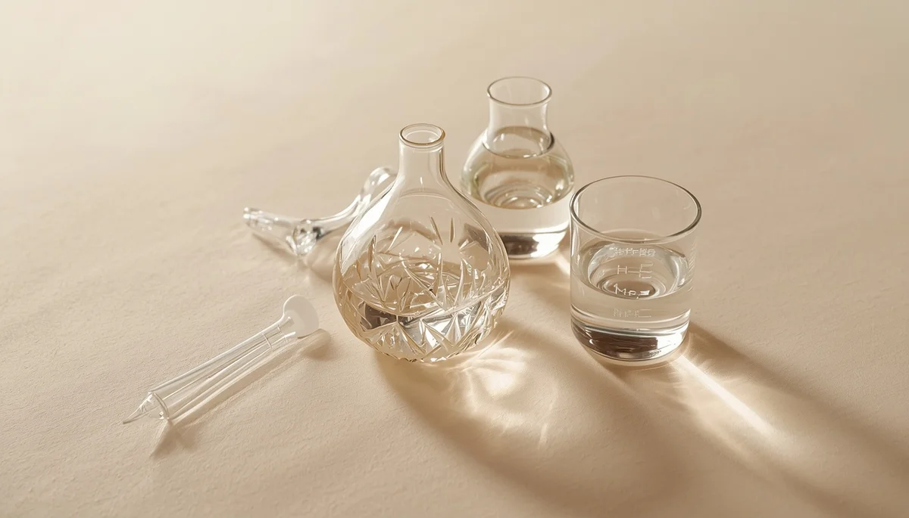

Uso responsable de antitérmicos
El uso de fármacos como el paracetamol o el ibuprofeno genera con frecuencia dudas razonables en las familias. Es vital comprender que estos medicamentos no curan la infección subyacente ni acortan la duración del proceso viral; su función principal consiste en restaurar el bienestar del niño cuando la fiebre le provoca decaimiento intenso, dolor corporal o irritabilidad manifiesta.
Tratar el malestar general, no el número fijo del termómetro
La pauta clínica actual aconseja administrar un antitérmico atendiendo estrictamente al estado general de confort del menor y nunca en función de una cifra fija en el termómetro. Si el niño registra una temperatura elevada pero se muestra participativo, sonríe y bebe líquidos con relativa normalidad, no resulta imprescindible administrar medicación farmacéutica.
"Los medicamentos antitérmicos son herramientas de confort para devolver la sonrisa al niño, no trofeos destinados a abatir cifras."
Pautas estrictas de seguridad y dosificación ponderal
Es indispensable respetar rigurosamente las dosis pautadas por el pediatra en función del peso actual del niño y mantener los intervalos mínimos de tiempo recomendados entre tomas. Evitar la automedicación aleatoria o la alternancia sistemática de fármacos sin supervisión médica previene efectos adversos innecesarios en la salud infantil.
Entender los límites de la medicación en el proceso infeccioso
Forzar la bajada artificial de la temperatura mediante fármacos cuando el niño se encuentra confortable puede interferir sutilmente en la respuesta defensiva del organismo. Recordar que el objetivo primordial es el alivio del sufrimiento y no la desaparición de la décimas ayuda a emplear los medicamentos con un criterio mucho más seguro, sensato y respetuoso con la salud.
➔ Volver al índice de manejo de la fiebre